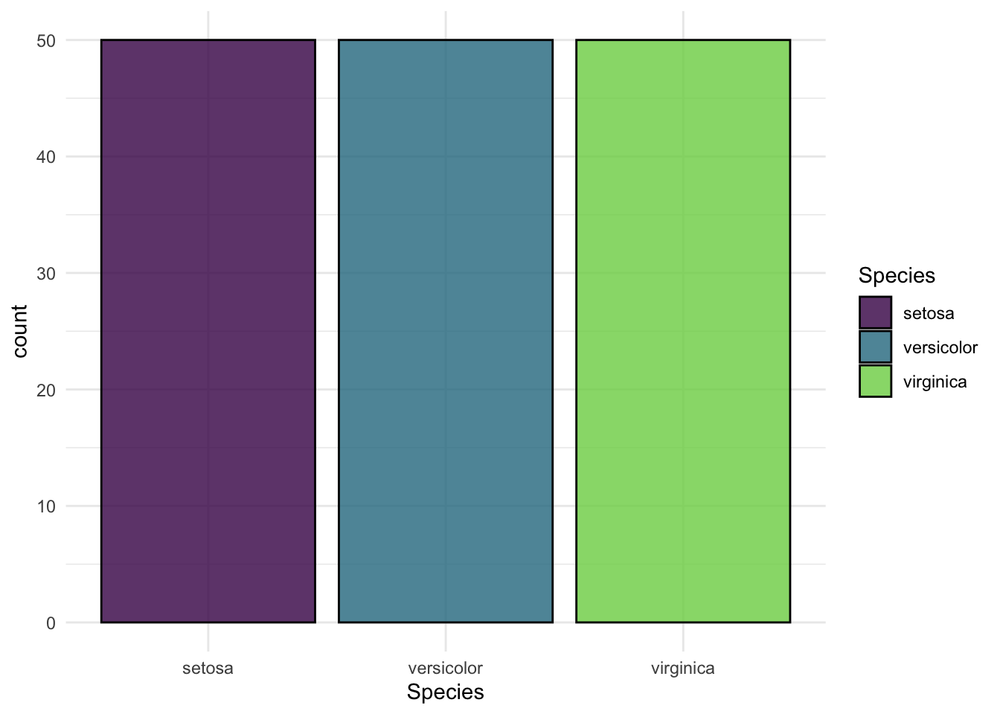
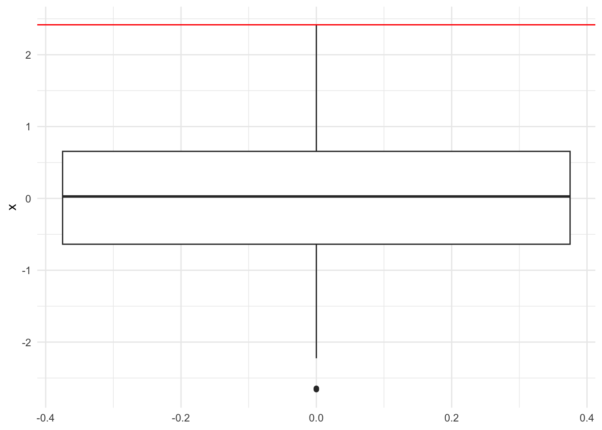
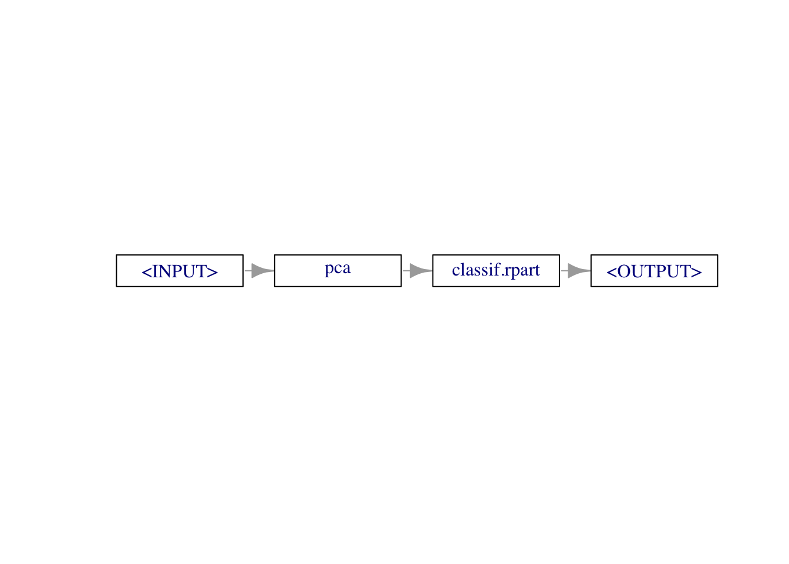
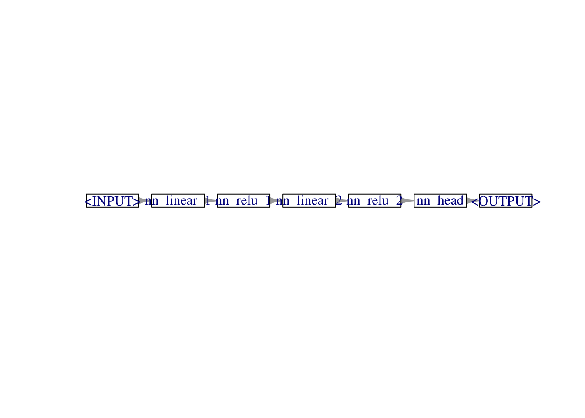

library(mlr3)
tsk("iris")<TaskClassif:iris> (150 x 5): Iris Flowers
* Target: Species
* Properties: multiclass
* Features (4):
- dbl (4): Petal.Length, Petal.Width, Sepal.Length, Sepal.Widthmlr3torch?mlr3torch is a package that extends the mlr3 framework with deep learning capabilities, allowing the application of deep learning techniques to both tabular and non-tabular data. The package implements many routines common in deep learning and allows users to focus on the actual problem at hand. Some advantages of using mlr3torch over ‘only’ torch are:
Less Code: Avoid writing repetitive boilerplate code by utilizing predefined network architectures or easily building custom ones tailored to your specific needs.
mlr3 Integration: Especially for users with experience in the mlr3 framework, working with mlr3torch should feel familiar. Due to the integration into the mlr3 framework, many mlr3 features like hyperparameter tuning, preprocessing, and resampling are readily available for mlr3torch.
However, as mlr3torch is a framework, it is less flexible than torch itself, so knowing both is recommended. Another helpful R package that provides many useful functions to train neural networks is luz.
mlr3 RecapBefore diving into mlr3torch, we will briefly review the core building blocks of the mlr3 machine learning framework. For reference, we recommend the mlr3 book that explains the mlr3 framework in more detail. Additionally, the mlr3 website contains more tutorials and overviews.
A task is a machine learning problem on a dataset. It consists of the data itself and some metadata such as the features or the target variable. To create an example task that comes with mlr3, we can use the tsk() function:
library(mlr3)
tsk("iris")<TaskClassif:iris> (150 x 5): Iris Flowers
* Target: Species
* Properties: multiclass
* Features (4):
- dbl (4): Petal.Length, Petal.Width, Sepal.Length, Sepal.WidthTo create a custom Task from a data.frame, we can use the as_task_<type> converters:
head(iris) Sepal.Length Sepal.Width Petal.Length Petal.Width Species
1 5.1 3.5 1.4 0.2 setosa
2 4.9 3.0 1.4 0.2 setosa
3 4.7 3.2 1.3 0.2 setosa
4 4.6 3.1 1.5 0.2 setosa
5 5.0 3.6 1.4 0.2 setosa
6 5.4 3.9 1.7 0.4 setosatsk_iris <- as_task_classif(iris, id = "iris", target = "Species")
tsk_iris<TaskClassif:iris> (150 x 5)
* Target: Species
* Properties: multiclass
* Features (4):
- dbl (4): Petal.Length, Petal.Width, Sepal.Length, Sepal.WidthTo get the help page for an mlr3 object, you can call tsk_iris$help().
You can access the data of a task using the $data() method, which accepts arguments rows and cols to select specific rows and columns.
tsk_iris$data(rows = 1:5, cols = c("Sepal.Length", "Sepal.Width")) Sepal.Length Sepal.Width
<num> <num>
1: 5.1 3.5
2: 4.9 3.0
3: 4.7 3.2
4: 4.6 3.1
5: 5.0 3.6Using the mlr3viz extension, we can get an overview of the task:
library(mlr3viz)
autoplot(tsk_iris)
A learner is a machine learning algorithm that can be $train()ed on a Task and $predict()ed on a Task. An overview of all learners is shown on our website. We can construct one by passing the name of the learner to the lrn() function.
lrn_tree <- lrn("classif.rpart")Next, we need to split the data into a training and test set and apply the learner on the former.
split <- partition(tsk_iris, ratio = 0.8)
lrn_tree$train(tsk_iris, row_ids = split$train)The trained model can be accessed via the $model slot of the learner:
print(lrn_tree$model)n= 120
node), split, n, loss, yval, (yprob)
* denotes terminal node
1) root 120 75 virginica (0.33333333 0.29166667 0.37500000)
2) Petal.Length< 2.45 40 0 setosa (1.00000000 0.00000000 0.00000000) *
3) Petal.Length>=2.45 80 35 virginica (0.00000000 0.43750000 0.56250000)
6) Petal.Length< 4.75 32 1 versicolor (0.00000000 0.96875000 0.03125000) *
7) Petal.Length>=4.75 48 4 virginica (0.00000000 0.08333333 0.91666667) *To make predictions on the test set, we can use the $predict() method of the learner:
predictions <- lrn_tree$predict(tsk_iris, row_ids = split$test)To make predictions on data.frames, we can use the $predict_newdata() method of the learner:
new_data <- iris[1:2, ]
lrn_tree$predict_newdata(new_data)<PredictionClassif> for 2 observations:
row_ids truth response
1 setosa setosa
2 setosa setosaTo assess the quality of the predictions, we can use a Measure. mlr3 comes with many predefined measures, and we can construct them by passing the name of the measure to the msr() function. Below, we construct the mean classification accuracy measure – which can only be applied to classification tasks – and use it to evaluate the predictions.
acc <- msr("classif.acc")
predictions$score(acc)classif.acc
0.9333333 For more elaborate evaluation strategies, we can use rsmp() to define a Resampling strategy that can be executed using resample().
rsmp_cv <- rsmp("cv", folds = 3)
rr <- resample(
task = tsk_iris,
learner = lrn_tree,
resampling = rsmp_cv
)
# Aggregate the results
rr$aggregate(msr("classif.acc"))classif.acc
0.9466667 Hyperparameter tuning is an essential process in machine learning to optimize the performance of models by selecting the best combination of hyperparameters. In the mlr3 framework, hyperparameter tuning is facilitated by the mlr3tuning extension, which provides a flexible and powerful interface for defining, searching, and evaluating hyperparameters.
Hyperparameters: Configurable settings provided to the learning algorithm before training begins, such as learning rate, number of trees in a random forest, or regularization parameters.
Search Space: The range of values or distributions from which hyperparameters are sampled during the tuning process.
Resampling Strategy: A method to evaluate the performance of a hyperparameter configuration, commonly using techniques like cross-validation or bootstrapping.
Tuner: An algorithm that explores the search space to find the optimal hyperparameters. Common tuners include grid search, random search, and Bayesian optimization.
Define the Search Space: Specify the range and distribution of hyperparameters to explore.
library(mlr3tuning)Loading required package: paradoxlrn_tree$configure(
cp = to_tune(lower = 0.001, upper = 0.1),
maxdepth = to_tune(lower = 1, upper = 30)
)Choose a Resampling Strategy: Determine how to evaluate each hyperparameter configuration’s performance.
rsmp_tune <- rsmp("cv", folds = 3)Select a Tuner: Decide on the algorithm that will search through the hyperparameter space.
tuner <- tnr("random_search")Select a Measure: Define the metric to optimize during tuning.
msr_tune <- msr("classif.acc")Execute Tuning: Run the tuning process to find the optimal hyperparameters. Here we also specify our budget of 10 evaluations.
tune_result <- tune(
task = tsk_iris,
learner = lrn_tree,
resampling = rsmp_tune,
measure = msr_tune,
tuner = tuner,
term_evals = 10L
)Apply the Best Hyperparameters: Update the learner with the best-found hyperparameters and retrain the model.
lrn_tree$param_set$values <- tune_result$result_learner_param_vals
lrn_tree$train(tsk_iris)Question 1: Estimating the performance of a tuned model:
Through the tuning archive, we can access the performance of the best-found hyperparameter configuration.
tune_result$archive$data[order(classif.acc, decreasing = TRUE), ][1, classif.acc][1] 0.94Do you think this is a good estimate for the performance of the final model? Explain your answer.
One reason why we would expect the performance of the final model to be worse than the performance of the best-found hyperparameter configuration is due to optimization bias: We choose the model configuration with the highest validation performance. This selection process biases the result since the chosen model is the best among several trials. To illustrate this, imagine that we take the maximum of 10 random numbers drawn from a normal distribution with mean 0. The maximum over those numbers is larger than \(0\), even though this is the mean of the generating distribution.

These two steps can also be encapsulated in the AutoTuner class, which first finds the best hyperparameters and then trains the model with them.
at <- auto_tuner(
learner = lrn_tree,
resampling = rsmp_tune,
measure = msr_tune,
term_evals = 10L,
tuner = tuner
)The AutoTuner can be used just like any other Learner. To get a valid performance estimate of the tuning process, we can resample() it on the task. This is called nested resampling: the outer resampling is for evaluation and the inner resampling is for tuning.
rr <- resample(tsk_iris, at, rsmp_tune)
rr$aggregate()classif.ce
0.05333333 In many cases, we don’t only fit a single learner but a whole learning pipeline. Common use cases include the preprocessing of the data, e.g., for imputing missing values, scaling the data, or encoding categorical features, but many other operations are possible. The mlr3 extension mlr3pipelines is a toolbox for defining such learning pipelines. Its core building block is the PipeOp that can be constructed using the po() function.
library(mlr3pipelines)
pca <- po("pca")Just like a learner, it has a $train() and $predict() method, and we can apply it to a Task using these methods.
pca$train(list(tsk_iris))$output
<TaskClassif:iris> (150 x 5)
* Target: Species
* Properties: multiclass
* Features (4):
- dbl (4): PC1, PC2, PC3, PC4pca$predict(list(tsk_iris))[[1L]]<TaskClassif:iris> (150 x 5)
* Target: Species
* Properties: multiclass
* Features (4):
- dbl (4): PC1, PC2, PC3, PC4Usually, such PipeOps are combined with a Learner into a full learning Graph. This is possible using the %>>% chain operator.
library(mlr3pipelines)
graph <- po("pca") %>>% lrn("classif.rpart")
print(graph)Graph with 2 PipeOps:
ID State sccssors prdcssors
<char> <char> <char> <char>
pca <<UNTRAINED>> classif.rpart
classif.rpart <<UNTRAINED>> pcagraph$plot(horizontal = TRUE)
The resulting Graph can be converted back into a Learner using the as_learner() function and used just like any other Learner.
glrn <- as_learner(graph)
glrn$train(tsk_iris)mlr3torchmlr3torch builds upon the same components as mlr3, only that we use Deep Learners, and can also work on non-tabular data. A simple example learner is the lrn("classif.mlp") learner, which is a Multi-Layer Perceptron (MLP) for classification tasks.
library(mlr3torch)
lrn_mlp <- lrn("classif.mlp",
neurons = c(50, 50), # Two hidden layers with 50 neurons each
batch_size = 256, # Number of samples per gradient update
epochs = 30, # Number of training epochs
device = "auto", # Uses GPU if available, otherwise CPU
shuffle = TRUE, # because iris is sorted
optimizer = t_opt("adam") # Adam optimizer
)This multi-layer perceptron can be used just like the classification tree above.
lrn_mlp$train(tsk_iris, row_ids = split$train)The trained nn_module can be accessed via the $model slot of the learner:
lrn_mlp$model$networkAn `nn_module` containing 2,953 parameters.
── Modules ─────────────────────────────────────────────────────────────────────────────────────────────────────────────
• 0: <nn_linear> #250 parameters
• 1: <nn_relu> #0 parameters
• 2: <nn_dropout> #0 parameters
• 3: <nn_linear> #2,550 parameters
• 4: <nn_relu> #0 parameters
• 5: <nn_dropout> #0 parameters
• 6: <nn_linear> #153 parametersBesides the trained network, the $model of the learner also contains the $state_dict() of the optimizer and other information.
Having trained the neural network on the training set, we can now make predictions on the test set:
predictions <- lrn_mlp$predict(tsk_iris, row_ids = split$test)
predictions$score(msr("classif.acc"))classif.acc
0.5 Using the benchmarking facilities of mlr3, we can also easily compare the classification tree with our deep learning learner:
# Define the resampling strategy
rsmp_cv <- rsmp("cv", folds = 3)
# Create a benchmark grid to compare both learners
benchmark_grid <- benchmark_grid(
tasks = tsk_iris,
learners = list(lrn_tree, lrn_mlp),
resampling = rsmp_cv
)
# Run the benchmark
rr_benchmark <- benchmark(benchmark_grid)
# Aggregate the results
results_benchmark <- rr_benchmark$aggregate(msr("classif.acc"))
# Print the results
print(results_benchmark) nr task_id learner_id resampling_id iters classif.acc
<int> <char> <char> <char> <int> <num>
1: 1 iris classif.rpart cv 3 0.94
2: 2 iris classif.mlp cv 3 0.64
Hidden columns: resample_resultTracking validation performance is crucial for understanding how well your neural network is learning and to detect issues such as overfitting. In the mlr3 machine learning framework, this can be easily done by specifying the $validate field of a Learner. Note that this is not possible for all Learners, but only for those with the "validation" property. This includes boosting algorithms such as XGBoost or CatBoost, and also the mlr3torch learners.
Below, we set the validation ratio to 30% of the training data, specify the measures to record, and set the callbacks of the learner to record the history of the training process.
lrn_mlp$configure(
validate = 0.3,
callbacks = t_clbk("history"),
predict_type = "prob",
measures_valid = msr("classif.logloss"),
measures_train = msr("classif.logloss")
)The $configure() method of a Learner allows you to simultaneously set fields and hyperparameters of a learner.
When we now train the learner, 30% of the training data is used for validation, and the loss is recorded in the history of the learner.
lrn_mlp$train(tsk_iris)After training, the results of the callback can be accessed via the model.
head(lrn_mlp$model$callbacks$history)Key: <epoch>
epoch train.classif.logloss valid.classif.logloss
<num> <num> <num>
1: 1 1.216219 1.0216911
2: 2 1.090373 1.0141709
3: 3 1.103897 1.0070298
4: 4 1.163823 1.0011182
5: 5 1.100077 0.9970761
6: 6 1.111388 0.9937620Additionally, the final validation scores can be accessed via the $internal_valid_scores field of the learner.
lrn_mlp$internal_valid_scores$classif.logloss
[1] 0.8368236mlr3torch also allows defining custom architectures by assembling special PipeOps in a Graph. As a starting point in the graph, we need to mark the entry of the Neural Network using an ingress pipeop. Because we are working with a task with only one numeric feature, we can use po("torch_ingress_num"). There also exist inputs for categorical features (po("torch_ingress_cat")) and generic tensors (po("torch_ingress_ltnsr")).
ingress <- po("torch_ingress_num")The next steps in the graph are the actual layers of the neural network.
architecture <- po("nn_linear_1", out_features = 100) %>>%
po("nn_relu_1") %>>%
po("nn_linear_2", out_features = 100) %>>%
po("nn_relu_2") %>>%
po("nn_head")
architecture$plot(horizontal = TRUE)
After specifying the architecture, we need to set the remaining parts for the learner, which are the loss, optimizer, and the remaining training configuration such as the epochs, device, or the batch size.
graph <- ingress %>>% architecture %>>%
po("torch_loss", loss = "cross_entropy") %>>%
po("torch_optimizer", optimizer = t_opt("adam")) %>>%
po("torch_model_classif", epochs = 10, batch_size = 256)Just like before, we can convert the graph into a Learner using as_learner() and train it on the task:
glrn <- as_learner(graph)
glrn$train(tsk_iris, row_ids = split$train)In the mlr3 ecosystem, the data of a task is always stored in a data.frame or data.table. To work with non-tabular data, the mlr3torch package offers a custom datatype, the lazy_tensor, which can be stored in a data.table.
As an example to showcase this, we can use the CIFAR-10 dataset, which is a dataset of 60,000 32x32 color images in 10 classes, with 6,000 images per class.
tsk_cifar <- tsk("cifar10")
tsk_cifar<TaskClassif:cifar10> (60000 x 2): CIFAR-10 Classification
* Target: class
* Properties: multiclass
* Features (1):
- lt (1): imageThe image below shows some examples from the dataset:

To avoid having to re-download the dataset every time, you can set the mlr3torch.cache option to TRUE.
options(mlr3torch.cache = TRUE)When accessing the data, only the images are represented as lazy_tensors, the labels are still stored as a factor column:
tsk_cifar$head() class image
<fctr> <lazy_tensor>
1: frog <tnsr[3x32x32]>
2: truck <tnsr[3x32x32]>
3: truck <tnsr[3x32x32]>
4: deer <tnsr[3x32x32]>
5: automobile <tnsr[3x32x32]>
6: automobile <tnsr[3x32x32]>A lazy_tensor column can be compared to the torch::dataset class that we have seen earlier. This means it does not necessarily store the data in memory, but only stores the information on how to load the data.
image_vec <- tsk_cifar$data(cols = "image")[[1L]]
head(image_vec)<ltnsr[6]>
[1] <tnsr[3x32x32]> <tnsr[3x32x32]> <tnsr[3x32x32]> <tnsr[3x32x32]> <tnsr[3x32x32]> <tnsr[3x32x32]>To access the data as torch_tensors, we can call the materialize() function:
image_tensor <- materialize(image_vec)[[1L]]To construct the CIFAR-10 task ourselves, we need to first:
torch::dataset that returns the images as torch_tensors.factor() vector that contains the labels.We can access the dataset via the torchvision package. For simplicity, we will only load the training data.
cifar10_original <- torchvision::cifar10_dataset(root = "data/cifar10", train = TRUE, download = TRUE)
image_array <- cifar10_original$x
str(image_array) int [1:50000, 1:32, 1:32, 1:3] 59 154 255 28 170 159 164 28 134 125 ...The array contains 50,000 images (rows) of shape 32x32x3. The last dimension contains the channels, i.e., the RGB values of the pixels. We reshape this so the channel dimension is the first dimension, which is the standard format for images in torch.
image_array <- aperm(image_array, c(1, 4, 2, 3))
dim(image_array)[1] 50000 3 32 32Next, we create a torch::dataset() that loads individual images as a torch_tensor. To convert this to a lazy_tensor later, the $.getitem() method needs to return a named list.
dataset_cifar10 <- dataset("cifar10",
initialize = function(x) {
self$x <- x
},
.getitem = function(i) {
list(image = torch_tensor(self$x[i, , , ]))
},
.length = function() {
nrow(self$x)
}
)The above object is not yet a dataset, but a dataset constructor, so we create the actual dataset by calling it with the image array.
cifar10 <- dataset_cifar10(image_array)We can check that this works correctly by accessing the first image.
str(cifar10$.getitem(1))List of 1
$ image:Long [1:3, 1:32, 1:32]To convert this to a lazy_tensor, we can use the as_lazy_tensor() function. The only thing we need to specify is the output shapes of the tensors, which we set to c(NA, 3, 32, 32). The NA is used to indicate that the first dimension (batch dimension) can be of any size.
cifar10_lt <- as_lazy_tensor(cifar10, dataset_shapes = list(image = c(NA, 3, 32, 32)))
head(cifar10_lt)<ltnsr[6]>
[1] <tnsr[3x32x32]> <tnsr[3x32x32]> <tnsr[3x32x32]> <tnsr[3x32x32]> <tnsr[3x32x32]> <tnsr[3x32x32]>To check that transformations on images were applied correctly, it can be useful to inspect the images, e.g., using torchvision::tensor_image_browse().
Next, we create the factor vector that contains the labels. For that, we use the data stored in the original torchvision::cifar10_dataset() object.
labels <- factor(cifar10_original$y, labels = cifar10_original$classes[1:10])
str(labels) Factor w/ 10 levels "airplane","automobile",..: 7 10 10 5 2 2 3 8 9 4 ...Next, we create a data.table that contains the images and labels.
cifar10_dt <- data.table(image = cifar10_lt, label = labels)
head(cifar10_dt) image label
<lazy_tensor> <fctr>
1: <tnsr[3x32x32]> frog
2: <tnsr[3x32x32]> truck
3: <tnsr[3x32x32]> truck
4: <tnsr[3x32x32]> deer
5: <tnsr[3x32x32]> automobile
6: <tnsr[3x32x32]> automobileThis table can now be converted to an mlr3::Task using the as_task_<type> converters.
tsk_cifar <- as_task_classif(cifar10_dt, id = "cifar10", target = "label")
tsk_cifar<TaskClassif:cifar10> (50000 x 2)
* Target: label
* Properties: multiclass
* Features (1):
- lt (1): imageWe will now try to train a simple multi-layer perceptron – the one we have defined above – on the images. One problem that we have is that the images are of shape 32x32x3, but the nn_linear layer expects a flat input of size 3072 (32 * 32 * 3).
This is where the lazy_tensor datatype comes in handy. We can use the PipeOps to transform the data before it is loaded. Here, the -1 in the shape c(-1, 3072) indicates that the first dimension (batch dimension) can be of any size.
reshaper <- po("trafo_reshape", shape = c(-1, 3072))
tsk_cifar_flat <- reshaper$train(list(tsk_cifar))[[1L]]
tsk_cifar_flat$head() label image
<fctr> <lazy_tensor>
1: frog <tnsr[3072]>
2: truck <tnsr[3072]>
3: truck <tnsr[3072]>
4: deer <tnsr[3072]>
5: automobile <tnsr[3072]>
6: automobile <tnsr[3072]>Note that this transformation is not applied eagerly, but only when the data is actually loaded.
In this case, as all the images are stored in memory, we could have also applied the transformation directly to the array representing the images, but decided not to do this for demonstration purposes.
We can now use almost the same graph as before on the flattened task. We only need to exchange the ingress, as the new task has as data a lazy_tensor instead of numeric vectors.
graph <- po("torch_ingress_ltnsr") %>>% architecture %>>%
po("torch_loss", loss = t_loss("cross_entropy")) %>>%
po("torch_optimizer", optimizer = t_opt("adam")) %>>%
po("torch_model_classif", epochs = 10, batch_size = 256)
glrn <- as_learner(graph)glrn$train(tsk_cifar_flat)Alternatively, we can integrate the flattening step into the graph from which the GraphLearner was created.
graph_with_flattening <- reshaper %>>% graph
glrn_with_flattening <- as_learner(graph_with_flattening)This learner can now be applied directly to the (unflattened) task.
glrn_with_flattening$param_set$set_values(torch_model_classif.epochs = 0)glrn_with_flattening$train(tsk_cifar)mlr3torch LearnerWe have seen earlier that torch tensors cannot simply be saved using saveRDS(). The same also applies to the mlr3torch learners. To save an mlr3torch learner, we need to call the $marshal() method first.
pth <- tempfile(fileext = ".rds")
glrn_with_flattening$marshal()
saveRDS(glrn_with_flattening, pth)Afterward, we can load the learner again using readRDS() and the $unmarshal() method.
glrn_with_flattening <- readRDS(pth)
glrn_with_flattening$unmarshal()